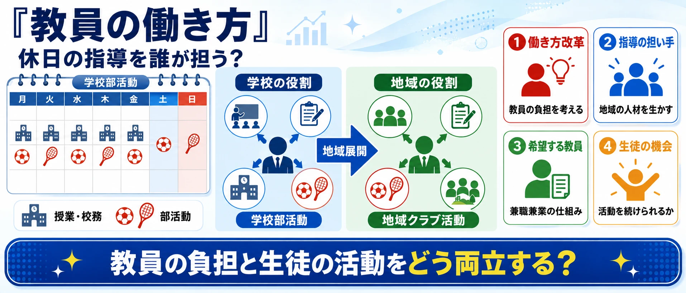
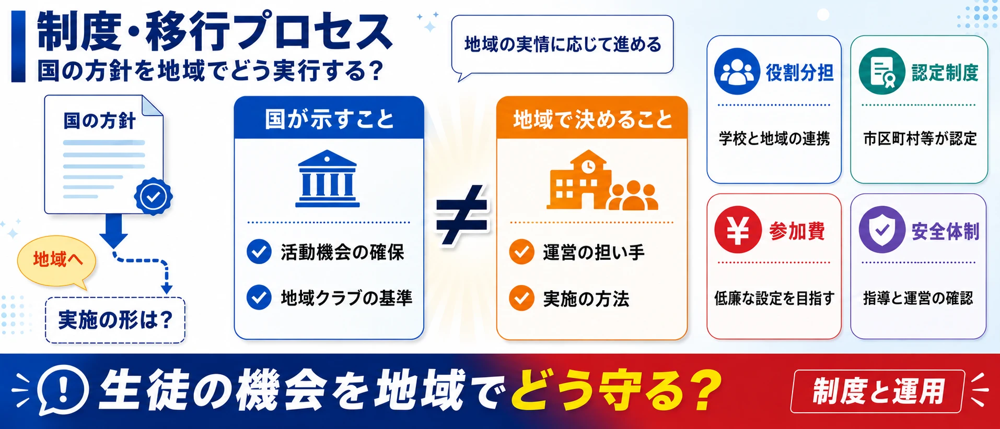
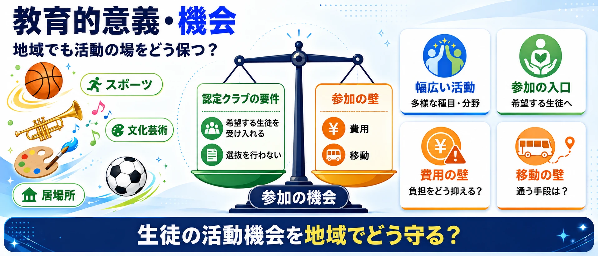
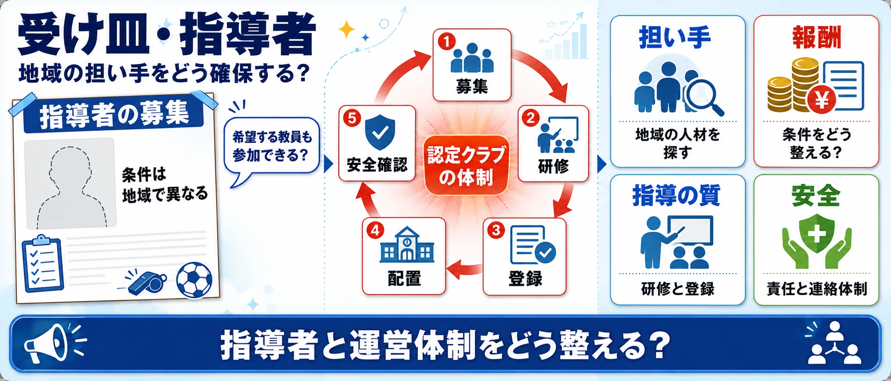
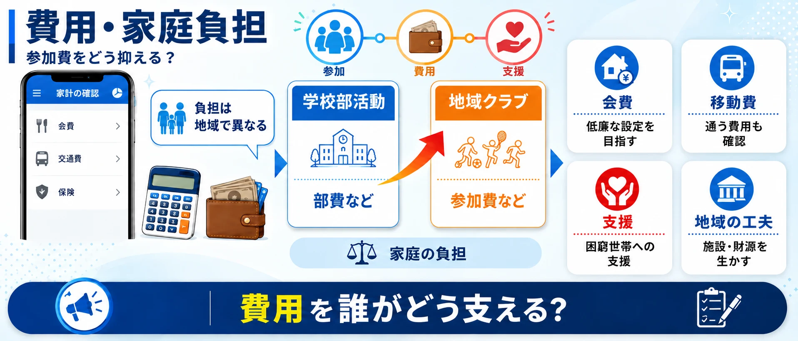
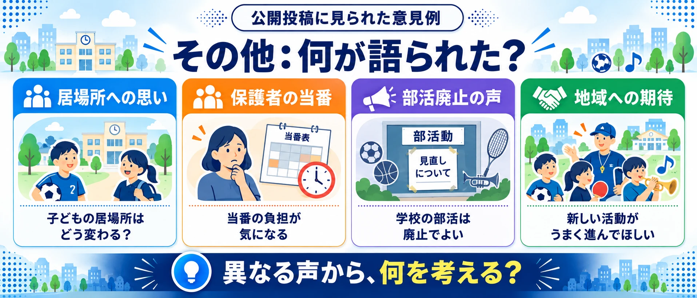
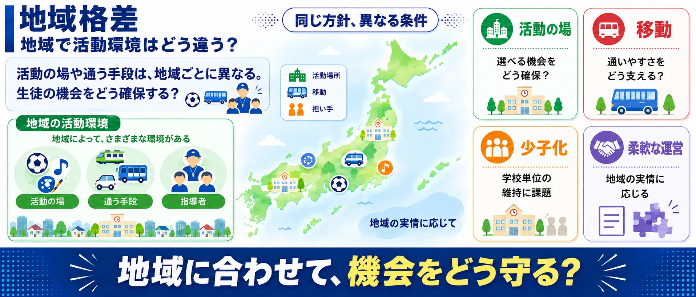

いつから？
国の改革実行期間は
2026〜2031年度です。
実施時期は地域ごとに異なります。
休日・平日の違いを見る →制度の基本を確かめ、SNSの声を論点ごとに読み解きます。
地域移行は、国のガイドラインでは「地域展開」と呼ばれています。
国の改革実行期間は
2026〜2031年度です。
実施時期は地域ごとに異なります。
休日・平日の違いを見る →会費は地域や活動に
よって異なります。
保険・用具・送迎の負担も確認します。
費用の資料と意見を読む →費用・指導者・
教員の負担など。
何を期待し、何を心配するかで見方が分かれます。
理由の違いを読む →国の改革実行期間は、2026〜2028年度の前期と2029〜2031年度の後期です。主な対象は公立中学校等です。
休日は、この期間内に原則すべての学校部活動で地域展開の実現を目指します。地域展開が難しい中山間地域や離島等では、当面は部活動指導員の配置などを進めます。
平日は、課題を解決しながら改革を進める方針です。全国すべての学校で同じ日に始まる制度ではありません。
お住まいの地域の開始時期は、学校や自治体の案内で確かめてください。
国の取組方針を読む・概要2ページ（PDF） ↗いいえ。国は公立中学校等を主な対象に、6年間で休日の地域展開を進める方針です。開始日や進め方は自治体ごとに違います。
同じ改革を指す文脈で使われる呼び方です。国は、学校から地域へ単純に移す印象を避け、地域全体で活動機会を広げる考えを示すため「地域展開」を使っています。
全国的な地域展開の主な対象は公立中学校等です。高校や私立中学校が一律に同じ日程で変わる制度ではないため、学校や設置者の案内を確認する必要があります。
全国一律の金額はありません。公的負担と参加者負担の組み合わせ、保険料、指導者謝金などが自治体・クラブごとに決まります。
全国共通の決まりはありません。活動場所と移動手段は地域の制度設計によるため、自治体や運営団体の案内を確認してください。
希望する教員が、学校や教育委員会の許可を得て兼職兼業として関わる仕組みがあります。勤務条件や報酬は自治体等で異なります。
制度の出典：文部科学省・スポーツ庁 新ガイドライン（令和7年12月）／新ガイドラインFAQ（令和8年3月31日時点・PDF）
Yahoo!リアルタイム検索で集めた公開投稿のサンプルです。社会全体の世論調査ではありません。
収集期間 2026-06-27〜2026-10-08／収集1986件・意見1578件（この図の母数）／更新 2026-10-08
AI分類。代表投稿は編集部が選定
SNS投稿の分析です。人数や世論全体の割合を示すものではありません。
山や論点を選ぶと、
下の意見と推移が切り替わります。
幅＝投稿数 高さ＝強い表現の割合
小さな論点は選びやすい幅に補正しています。
高さは重要度や正しさを表しません。強い言い方を含む投稿の割合です。
投稿が少ない論点では、数件の違いで割合が大きく変わります。目盛りの上限は、表示中の割合に合わせて変わります。
| 論点 | 投稿数 | 強い表現 |
|---|
切り替わるのは山並みの集計です。下の理由と資料は、選んだ論点全体を扱います。
部活動の指導や休日対応を減らし、教員が授業や私生活に使える時間を取り戻してほしいという意見です。専門指導者への期待がある一方、地域へ移しても教員の負担は残るのではないかという懸念もあります。給与や勤務時間の制度を見直すべきだという声も含みます。
ひと目で見る、この論点の推移
2026年7月23日〜2026年10月8日。「その他」を除く意見の投稿に占める割合と件数です。世論全体の変化を示すものではありません。
移行よりも、教員の給与や勤務時間の制度を見直してほしいという意見です。
元のX投稿を最大2件表示します。
公開中の理由分類の見出しを表示しています。
元のX投稿を最大2件表示します。
外部への委託や専門の指導者に期待する声です。指導の質が高まることへの期待も含みます。
元のX投稿を最大2件表示します。
公開中の理由分類の見出しを表示しています。
元のX投稿を最大2件表示します。
公開中の理由分類の見出しを表示しています。
元のX投稿を最大2件表示します。
部活動にかかる教員の負担を減らし、本来の仕事や私生活の時間を取り戻したいという意見です。
元のX投稿を最大2件表示します。
地域に移しても教員の負担は減らず、むしろ増えるのではないかという意見です。
元のX投稿を最大2件表示します。
公開中の理由分類の見出しを表示しています。
元のX投稿を最大2件表示します。
公開中の理由分類の見出しを表示しています。
元のX投稿を最大2件表示します。
公開中の理由分類の見出しを表示しています。
元のX投稿を最大2件表示します。
公開中の理由分類の見出しを表示しています。
元のX投稿を最大2件表示します。
公開中の理由分類の見出しを表示しています。
元のX投稿を最大2件表示します。
公開中の理由分類の見出しを表示しています。
元のX投稿を最大2件表示します。
公開中の理由分類の見出しを表示しています。
元のX投稿を最大2件表示します。
公開中の理由分類の見出しを表示しています。
元のX投稿を最大2件表示します。
この分は、理由の分類をまだ読み直していません。ほかの理由の件数に振り分けず、分けて表示しています。
この理由に対応する投稿例は、このページには掲載していません。
「教員の働き方」に関する投稿の主張を、公表された資料と照らし合わせます。
一次資料で確かめたこと
この投稿が書かれた2026年8月の時点で、教職調整額はすでに5%へ上がっている。足りないという評価は評価として、4%のままという事実の部分は法律の条文と合わない。
e-Gov法令検索 公立の義務教育諸学校等の教育職員の給与等に関する特別措置法 第三条・附則 ↗外部指導者へ委託するだけでは、引率・事故対応・保護者対応などの実質的な責任や事務が学校・教員に残り、負担は思うほど減らない。
『外部委託しても学校の運営体制そのものは変わらず、引率・事故対応・保護者対応などの負担は教員に残る』という同じ懸念から、慎重・反対側は『負担の本質が変わらないなら移行そのものに懐疑的』という結論に至り、条件付き・改善要求側は『立会い義務や応急対応の分担など、欠けている部分を制度で埋めれば移行は進められる』という結論に至る。移行への懐疑と、制度を作り込んで移行を進める論に分かれる。
編集部による整理・確認日 2026-09-02

元のX投稿を最大2件表示します。
地域移行をいつ、どのような手順で進めるのかをめぐる意見です。自治体の計画や日程に触れる投稿のほか、まだ決まっていない条件や、移行が進まない理由を指摘する声があります。移行期にいる子どもや家庭への影響、活動の選択肢への期待も語られています。
ひと目で見る、この論点の推移
2026年7月23日〜2026年10月8日。「その他」を除く意見の投稿に占める割合と件数です。世論全体の変化を示すものではありません。
公開中の理由分類の見出しを表示しています。
元のX投稿を最大2件表示します。
公開中の理由分類の見出しを表示しています。
元のX投稿を最大2件表示します。
公開中の理由分類の見出しを表示しています。
元のX投稿を最大2件表示します。
公開中の理由分類の見出しを表示しています。
元のX投稿を最大2件表示します。
公開中の理由分類の見出しを表示しています。
元のX投稿を最大2件表示します。
公開中の理由分類の見出しを表示しています。
元のX投稿を最大2件表示します。
公開中の理由分類の見出しを表示しています。
元のX投稿を最大2件表示します。
公開中の理由分類の見出しを表示しています。
元のX投稿を最大2件表示します。
この分は、理由の分類をまだ読み直していません。ほかの理由の件数に振り分けず、分けて表示しています。
この理由に対応する投稿例は、このページには掲載していません。
「制度・移行プロセス」に関する投稿の主張を、公表された資料と照らし合わせます。
一次資料で確かめたこと
3年間という期間はそのとおりだが、資料はそれを「重点的に支援する期間」と書いており、全国の移行を終える期限としては書いていない。
スポーツ庁・文化庁 学校部活動及び新たな地域クラブ活動の在り方等に関する総合的なガイドライン（令和4年12月・PDF） ↗文部科学省 部活動改革及び地域クラブ活動の推進等に関する総合的なガイドライン（令和7年12月・PDF） ↗一次資料で確かめたこと
国費は付いており、額も公表されている。ただし補助の対象は運営経費側で、家庭が払う会費そのものを国が肩代わりする仕組みではないため、負担が残るという感覚のほうは資料と矛盾しない。
スポーツ庁 部活動の地域展開等の全国的な実施（令和8年度当初予算・PDF） ↗スポーツ庁 学習指導要領における部活動・地域クラブ活動の取扱いに関する検討ワーキンググループ（第2回）議事録 ↗外部指導者へ委託するだけでは、引率・事故対応・保護者対応などの実質的な責任や事務が学校・教員に残り、負担は思うほど減らない。
『外部委託しても学校の運営体制そのものは変わらず、引率・事故対応・保護者対応などの負担は教員に残る』という同じ懸念から、慎重・反対側は『負担の本質が変わらないなら移行そのものに懐疑的』という結論に至り、条件付き・改善要求側は『立会い義務や応急対応の分担など、欠けている部分を制度で埋めれば移行は進められる』という結論に至る。移行への懐疑と、制度を作り込んで移行を進める論に分かれる。
編集部による整理・確認日 2026-09-02

元のX投稿を最大2件表示します。
子どもが活動を始める機会や、学校での居場所がどう変わるかをめぐる意見です。選べる活動が増えることへの期待と、気軽に参加できる入口が失われることへの懸念があります。部活動にどんな教育的な意味があるのか、その役割自体を問い直す声も含みます。
ひと目で見る、この論点の推移
2026年7月23日〜2026年10月8日。「その他」を除く意見の投稿に占める割合と件数です。世論全体の変化を示すものではありません。
公開中の理由分類の見出しを表示しています。
元のX投稿を最大2件表示します。
公開中の理由分類の見出しを表示しています。
元のX投稿を最大2件表示します。
公開中の理由分類の見出しを表示しています。
元のX投稿を最大2件表示します。
公開中の理由分類の見出しを表示しています。
元のX投稿を最大2件表示します。
公開中の理由分類の見出しを表示しています。
元のX投稿を最大2件表示します。
公開中の理由分類の見出しを表示しています。
元のX投稿を最大2件表示します。
公開中の理由分類の見出しを表示しています。
元のX投稿を最大2件表示します。
公開中の理由分類の見出しを表示しています。
元のX投稿を最大2件表示します。
この分は、理由の分類をまだ読み直していません。ほかの理由の件数に振り分けず、分けて表示しています。
この理由に対応する投稿例は、このページには掲載していません。
「教育的意義・機会」に関する投稿の主張を、公表された資料と照らし合わせます。
一次資料で確かめたこと
参加できるようになっているのはそのとおり。ただし細則を読むと、学校の部活動と地域クラブの掛け持ちで大会に出ることは認められておらず、生徒はどちらか一方を選ぶことになる。
日本中学校体育連盟 令和7年度全国中学校体育大会 地域クラブ活動の参加資格の特例競技部細則（令６日中体発第305号・PDF） ↗
元のX投稿を最大2件表示します。
学校に代わって誰が活動を運営し、子どもを指導するのかをめぐる意見です。担い手の不足や報酬の低さに加え、安全管理や指導の質、責任の所在への不安が語られています。地域で受け皿ができたという報告もあり、活動を続けられる条件に注目する論点です。
ひと目で見る、この論点の推移
2026年7月23日〜2026年10月8日。「その他」を除く意見の投稿に占める割合と件数です。世論全体の変化を示すものではありません。
公開中の理由分類の見出しを表示しています。
元のX投稿を最大2件表示します。
公開中の理由分類の見出しを表示しています。
元のX投稿を最大2件表示します。
公開中の理由分類の見出しを表示しています。
元のX投稿を最大2件表示します。
公開中の理由分類の見出しを表示しています。
元のX投稿を最大2件表示します。
公開中の理由分類の見出しを表示しています。
元のX投稿を最大2件表示します。
公開中の理由分類の見出しを表示しています。
元のX投稿を最大2件表示します。
この分は、理由の分類をまだ読み直していません。ほかの理由の件数に振り分けず、分けて表示しています。
この理由に対応する投稿例は、このページには掲載していません。
「受け皿・指導者」に関する投稿の主張を、公表された資料と照らし合わせます。
一次資料で確かめたこと
最低賃金に届かない試算（熊本市の副顧問1,000円）は実在するが、公表されている時間額は1,000円台後半から2,000円台までひらきがある。全国どこでも最低賃金並み、という形にはなっていない。
熊本市教育委員会 熊本市立中学校における新しい学校部活動の在り方（素案）（PDF） ↗厚生労働省 令和7年度 地域別最低賃金 全国一覧（PDF） ↗熊本市 令和8年度 熊本市立中学校部活動指導員（会計年度任用職員）募集 ↗一次資料で確かめたこと
顧問を命じられること、大会の引率ができることは、どちらも資料に書いてある。ただし投稿が添える「会計年度任用の非常勤職員」という身分は国の資料には無く、身分や任用は学校の設置者が規則で定める（自治体ごとに違う）。
スポーツ庁 部活動指導員の概要（PDF） ↗e-Gov法令検索 学校教育法施行規則 第七十八条の二 ↗地域移行後にクラブを引き受ける指導者の謝礼・時給が低すぎて、生活が成り立たない、あるいは希望する人が集まらない。
同じ『低待遇では続かない』という懸念から、慎重・反対側は『待遇が上がらない前提なら地域移行自体を進めるべきではない』と結論づけ、条件付き・改善要求側は『予算を増やして待遇を改善すれば移行は続けられる』と結論づける。中止か、改善して継続かで分かれる。
編集部による整理・確認日 2026-09-02
外部指導者へ委託するだけでは、引率・事故対応・保護者対応などの実質的な責任や事務が学校・教員に残り、負担は思うほど減らない。
『外部委託しても学校の運営体制そのものは変わらず、引率・事故対応・保護者対応などの負担は教員に残る』という同じ懸念から、慎重・反対側は『負担の本質が変わらないなら移行そのものに懐疑的』という結論に至り、条件付き・改善要求側は『立会い義務や応急対応の分担など、欠けている部分を制度で埋めれば移行は進められる』という結論に至る。移行への懐疑と、制度を作り込んで移行を進める論に分かれる。
編集部による整理・確認日 2026-09-02

元のX投稿を最大2件表示します。
会費や送迎などの負担を、家庭・自治体・指導者の間でどう分担するかをめぐる意見です。家庭の支出が増えることや、お金を理由に参加を諦める子どもが出ることへの懸念があります。いまの低い費用は誰かの無償労働に支えられているとして、財源の見直しを求める声も含みます。
ひと目で見る、この論点の推移
2026年7月23日〜2026年10月8日。「その他」を除く意見の投稿に占める割合と件数です。世論全体の変化を示すものではありません。
公開中の理由分類の見出しを表示しています。
元のX投稿を最大2件表示します。
公開中の理由分類の見出しを表示しています。
元のX投稿を最大2件表示します。
公開中の理由分類の見出しを表示しています。
元のX投稿を最大2件表示します。
公開中の理由分類の見出しを表示しています。
元のX投稿を最大2件表示します。
公開中の理由分類の見出しを表示しています。
元のX投稿を最大2件表示します。
公開中の理由分類の見出しを表示しています。
元のX投稿を最大2件表示します。
この分は、理由の分類をまだ読み直していません。ほかの理由の件数に振り分けず、分けて表示しています。
この理由に対応する投稿例は、このページには掲載していません。
「費用・家庭負担」に関する投稿の主張を、公表された資料と照らし合わせます。
一次資料で確かめたこと
国費は付いており、額も公表されている。ただし補助の対象は運営経費側で、家庭が払う会費そのものを国が肩代わりする仕組みではないため、負担が残るという感覚のほうは資料と矛盾しない。
スポーツ庁 部活動の地域展開等の全国的な実施（令和8年度当初予算・PDF） ↗スポーツ庁 学習指導要領における部活動・地域クラブ活動の取扱いに関する検討ワーキンググループ（第2回）議事録 ↗一次資料で確かめたこと
投稿が間違いという意味ではない。国や自治体が公表した統計としては裏が取れなかった、というだけ。数字の出どころは、規模と方法が公表されている民間のネット調査だった。

元のX投稿を最大2件表示します。
ほかの6つの論点に分けられなかった意見の欄です。部活動そのものの存廃や、地域の別の課題と結び付けた意見など、異なる話題を含みます。ひとつの立場を表すまとまりではないため、個々の投稿が何について述べているかを確かめながら読む欄です。
現在は論点全体の集計を掲載しています。細かな理由分類は今後の確認対象です。
「その他」に関する投稿の主張を、公表された資料と照らし合わせます。
この論点に直接ひもづく主張の照合は、まだ掲載していません。
部活動改革の総合的なガイドライン ↗SNSでは語られにくい論点も読む ↓
元のX投稿を最大2件表示します。
住む地域によって、選べる活動や通える場所に差が出ることをめぐる意見です。地方での担い手や施設の不足、長距離の移動や保護者の送迎、文化系の活動を続けられるかが懸念されています。参加の機会を確保するため、行政の支援や移行前の制度設計を求める声もあります。
ひと目で見る、この論点の推移
2026年7月23日〜2026年10月8日。「その他」を除く意見の投稿に占める割合と件数です。世論全体の変化を示すものではありません。
現在は論点全体の集計を掲載しています。細かな理由分類は今後の確認対象です。
「地域格差」に関する投稿の主張を、公表された資料と照らし合わせます。
この論点に直接ひもづく主張の照合は、まだ掲載していません。
部活動改革の総合的なガイドライン ↗外部指導者へ委託するだけでは、引率・事故対応・保護者対応などの実質的な責任や事務が学校・教員に残り、負担は思うほど減らない。
『外部委託しても学校の運営体制そのものは変わらず、引率・事故対応・保護者対応などの負担は教員に残る』という同じ懸念から、慎重・反対側は『負担の本質が変わらないなら移行そのものに懐疑的』という結論に至り、条件付き・改善要求側は『立会い義務や応急対応の分担など、欠けている部分を制度で埋めれば移行は進められる』という結論に至る。移行への懐疑と、制度を作り込んで移行を進める論に分かれる。
編集部による整理・確認日 2026-09-02

元のX投稿を最大2件表示します。
部活動の負担を減らし、教員の時間を取り戻したい。
地域に移しても、教員の負担は減らないのではないか。
いまの安い会費は、誰かの無償労働に支えられている。
費用が増えることで、参加を諦める子どもが出ないか。
子どもが選べる活動が増えることに期待したい。
活動を始める入口や、子どもの居場所が失われないか。
理由の抜粋です。賛否の二分や、立場ごとの割合を示す表ではありません。
文部科学省が推進する「部活動の地域移行」。教員の働き方改革や少子化対策として期待される一方、費用負担や指導者不足、部活文化の喪失を懸念する声もあります。
1あなたが最も気になる論点をタップ （全2問）
試作では、この端末に選択内容を保存します。本番の投票集計には送信しません。
気になる項目から読めます。各資料の確認時点もあわせて記載しています。
「部活動の地域展開」（旧・地域移行）は、学校と地域が連携し、子どもが地域でスポーツ・文化芸術活動を続けられる環境を整える国の方針です。
公立中学校等を主な対象に、2026〜2031年度を改革実行期間として進めています。休日は原則すべての学校部活動で地域展開を目指しますが、開始時期、会費、送迎などは自治体ごとに違います。
少子化と教員の長時間労働を背景に、中学校の部活動を学校から地域のスポーツクラブや民間団体へ移す「地域移行」が国の方針として進められています。まず休日の部活動から段階的に移行を進める計画で、教員の負担軽減と、少子化で単独では部活動を維持できない学校の受け皿づくりが狙いです。
賛成する立場からは「教員の働き方改革に不可欠」「専門的な指導を受けられる機会が増える」という声があります。一方で、「地域に受け皿となるクラブや指導者がいない」「会費負担が増え、家庭の経済力で子どもの機会に格差が生まれる」「学校の部活動が持っていた教育的な意義が失われる」といった懸念も根強く、特に都市部と地方の環境差が大きな論点になっています。
移行の担い手や費用負担のあり方は自治体ごとに手探りの状態が続いており、現場の教員・保護者・地域それぞれの立場から異なる意見がSNS上でも交わされています。
「部活動指導員」が制度としてできました。それまでの外部指導者は技術指導しかできず、活動中の事故の責任の所在がはっきりしないため、大会に生徒を連れて行くことができませんでした。この制度で、大会の引率が仕事の内容に入りました。
出典: e-Gov法令検索 学校教育法施行規則 第七十八条の二／スポーツ庁 部活動指導員の概要（PDF）国が、学校の部活動と、新しくつくる「地域クラブ活動」のあり方をガイドラインにまとめました。学校の中の個人（指導員）にたのむ段階から、学校の外の組織（地域クラブ）へ移す段階に進みます。
出典: スポーツ庁・文化庁 学校部活動及び新たな地域クラブ活動の在り方等に関する総合的なガイドライン（令和4年12月・PDF）このガイドラインは、この3年間を「重点的に支援する期間」と書いています。全国の移行を終える期限としては書かれていません。「3年で終わるはずだった」という受け取り方は、ここから生まれています。
出典: 同ガイドライン（令和4年12月・PDF）中学校体育連盟が、地域クラブのチームも全国中学校体育大会に出られる特例を設けました。ただし細則では、学校の部活動と地域クラブの掛け持ちでの出場は認められておらず、生徒はどちらか一方を選ぶことになります。
出典: 日本中学校体育連盟 令和7年度全国中学校体育大会 地域クラブ活動の参加資格の特例競技部細則（PDF）新しいガイドラインが出ました。名称は「部活動改革及び地域クラブ活動の推進等に関する総合的なガイドライン」となり、学校から地域へ単純に移す印象を避けるため、改革の呼び方も「地域移行」から「地域展開」へ変わりました。2026〜2031年度を改革実行期間とし、休日は原則すべての学校部活動で地域展開を目指します。平日は前期の取組を検証した後、国が方針を改めて示す予定です。
出典: 文部科学省 部活動改革及び地域クラブ活動の推進等に関する総合的なガイドライン（令和7年12月・PDF）「部活動の地域展開等の全国的な実施」に国の予算が付いています。ただし補助の対象は運営にかかる経費で、家庭が払う会費そのものを国が肩代わりする仕組みではありません。教員の給与に上乗せされる教職調整額は、4%から5%へ上がりました。
出典: スポーツ庁 部活動の地域展開等の全国的な実施（令和8年度当初予算・PDF）／e-Gov法令検索 公立の義務教育諸学校等の教育職員の給与等に関する特別措置法 第三条地域移行は、活動場所だけを学校の外へ変える話ではありません。学校が担ってきた運営・費用・人材・安全の責任を、地域の誰が引き受ける設計かを確かめてから、意見の分布を読みます。
このページで未確認のこと
自治体ごとに上の条件がどこまで整っているかは、全国を比較できる資料を確認できていません。ここでは「できている地域／できていない地域」を断定せず、次のSNS投稿で、どの条件が論点になっているかを見ます。
ここからは、編集部が一次資料を読んで整理した内容です。SNS投稿の件数とは分けて読みます。
住んでいる自治体によって、大会参加費（1人あたり数万円規模）が全額補助される場合と、家庭が全額負担する場合に分かれる。国は補助の存在は認めているが、全国一律の下限保障は設けておらず、進み方は自治体の財政・方針に委ねられている。
学習指導要領における部活動・地域クラブ活動の取扱いに関する検討ワーキンググループ（第2回）議事録・浅野スポーツ庁次長発言 ↗地域クラブ活動における創設・運営ガイドブック（新潟県阿賀野市の事例） ↗確認日 2026-10-08
体育館・グラウンドなど活動場所の新設・改修費用は、この国の補助メニューでは対象にならない。学校施設をそのまま使えない地域クラブでは、施設にかかる費用は自治体や利用者側の負担として残る。
「部活動の地域展開等推進事業」補助金交付要綱・概要資料 ↗確認日 2026-10-08
生徒が同じ指導者に継続して習えるかは制度上保障されていない。指導員は1年ごとの任用で、最長でも5年で契約が終わる可能性がある（東京都の例。金額・条件は自治体ごとに異なる）。
令和8年度都立学校部活動指導員募集要項（会計年度任用職員） ↗確認日 2026-10-08
東京都立学校の部活動指導員として応募するには、実務・指導経験の合計6年以上という条件を満たす必要がある（東京都の令和8年度募集要項の例で、条件は自治体ごとに異なる）。指導者に何らかの資格・経験を求めるべきという意見はSNSにもあるが、その具体的な水準（6年以上）は一次資料にしかない。
令和8年度都立学校部活動指導員募集要項（会計年度任用職員） ↗確認日 2026-10-08
SNS上の意見の推移
2026年10月8日時点2026年10月8日の収集分では、部活動の地域移行に関する意見の投稿のうち、移行支持が39.8%でした。条件付き・改善要求は13.6%、慎重・反対は14.8%、中立・情報は31.8%です。
6月27日から10月8日までの13回の収集を、日付順に並べました。「移行支持」は6月27日の30.0%から39.8%へ、9.8ポイント上がりました。「条件付き・改善要求」は6月27日の22.7%から13.6%へ、9.1ポイント下がりました。どちらも、ぶれの範囲に収まる差です。
前回（10月1日）から今回（10月8日）にかけて、「条件付き・改善要求」は19.4%から13.6%へ、5.8ポイント下がりました。ぶれの範囲に収まる差です。
| 収集日 | 意見数 | 移行支持移行 支持 | 条件付き・改善要求条件付き・ 改善要求 | 慎重・反対慎重・ 反対 | 中立・情報中立・ 情報 |
|---|---|---|---|---|---|
| 6月27日 | 150件 | 30.0%（45件） | 22.7%（34件） | 14.7%（22件） | 32.7%（49件） |
| 7月12日 | 107件 | 31.8%（34件） | 17.8%（19件） | 15.9%（17件） | 34.6%（37件） |
| 7月23日 | 132件 | 37.1%（49件） | 13.6%（18件） | 17.4%（23件） | 31.8%（42件） |
| 8月2日 | 130件 | 36.9%（48件） | 18.5%（24件） | 11.5%（15件） | 33.1%（43件） |
| 8月8日 | 80件 | 41.2%（33件） | 17.5%（14件） | 17.5%（14件） | 23.8%（19件） |
| 8月14日 | 91件 | 36.3%（33件） | 22.0%（20件） | 12.1%（11件） | 29.7%（27件） |
| 8月20日 | 65件 | 35.4%（23件） | 13.8%（9件） | 23.1%（15件） | 27.7%（18件） |
| 8月26日 | 239件 | 32.2%（77件） | 25.9%（62件） | 20.1%（48件） | 21.8%（52件） |
| 9月2日 | 146件 | 26.7%（39件） | 20.5%（30件） | 17.1%（25件） | 35.6%（52件） |
| 9月15日 | 177件 | 31.6%（56件） | 17.5%（31件） | 19.2%（34件） | 31.6%（56件） |
| 9月22日 | 80件 | 32.5%（26件） | 18.8%（15件） | 26.2%（21件） | 22.5%（18件） |
| 10月1日 | 93件 | 34.4%（32件） | 19.4%（18件） | 18.3%（17件） | 28.0%（26件） |
| 10月8日 | 88件 | 39.8%（35件） | 13.6%（12件） | 14.8%（13件） | 31.8%（28件） |
2026年10月8日の収集分では、部活動の地域移行に関する意見の投稿のうち、主な論点が最も多いのは「教員の働き方」の33.3%でした。続いて「制度・移行プロセス」が21.4%、「教育的意義・機会」が19.0%です。
7月23日から10月8日までの11回の収集を、日付順に並べました。主な論点が「費用・家庭負担」の投稿は、7月23日の11.1%から7.1%へ、4.0ポイント下がりました。主な論点が「教員の働き方」の投稿は、7月23日の30.2%から33.3%へ、3.1ポイント上がりました。どちらも、ぶれの範囲に収まる差です。
前回（10月1日）から今回（10月8日）にかけて、主な論点が「教員の働き方」の投稿は、40.7%から33.3%へ、7.4ポイント下がりました。ぶれの範囲に収まる差です。
| 収集日 | 意見数 | 費用・家庭負担費用・ 家庭負担 | 受け皿・指導者受け皿・ 指導者 | 教員の働き方教員の 働き方 | 教育的意義・機会教育的 意義・機会 | 地域格差地域 格差 | 制度・移行プロセス制度・ 移行 |
|---|---|---|---|---|---|---|---|
| 7月23日 | 126件 | 11.1%（14件） | 15.9%（20件） | 30.2%（38件） | 19.8%（25件） | 0.0%（0件） | 23.0%（29件） |
| 8月2日 | 125件 | 12.0%（15件） | 15.2%（19件） | 39.2%（49件） | 17.6%（22件） | 0.0%（0件） | 16.0%（20件） |
| 8月8日 | 72件 | 12.5%（9件） | 8.3%（6件） | 29.2%（21件） | 18.1%（13件） | 1.4%（1件） | 30.6%（22件） |
| 8月14日 | 88件 | 14.8%（13件） | 10.2%（9件） | 31.8%（28件） | 15.9%（14件） | 0.0%（0件） | 27.3%（24件） |
| 8月20日 | 65件 | 7.7%（5件） | 7.7%（5件） | 23.1%（15件） | 20.0%（13件） | 3.1%（2件） | 38.5%（25件） |
| 8月26日 | 229件 | 10.9%（25件） | 18.8%（43件） | 24.5%（56件） | 19.7%（45件） | 1.7%（4件） | 24.5%（56件） |
| 9月2日 | 139件 | 14.4%（20件） | 15.1%（21件） | 28.8%（40件） | 18.7%（26件） | 2.2%（3件） | 20.9%（29件） |
| 9月15日 | 176件 | 13.1%（23件） | 19.3%（34件） | 29.5%（52件） | 13.1%（23件） | 2.3%（4件） | 22.7%（40件） |
| 9月22日 | 77件 | 11.7%（9件） | 13.0%（10件） | 33.8%（26件） | 20.8%（16件） | 1.3%（1件） | 19.5%（15件） |
| 10月1日 | 91件 | 9.9%（9件） | 16.5%（15件） | 40.7%（37件） | 15.4%（14件） | 2.2%（2件） | 15.4%（14件） |
| 10月8日 | 84件 | 7.1%（6件） | 17.9%（15件） | 33.3%（28件） | 19.0%（16件） | 1.2%（1件） | 21.4%（18件） |
授業・探究学習で使う
賛成・反対それぞれの理由を、まず3つずつ。メリット・デメリットを自分の言葉で書き出してから読み進めてください。
学校の部活動の会費が長く低く抑えられてきたのは、指導にあたる教員に指導料が上乗せされてこなかったからだ。指導を地域クラブや部活動指導員に委ねれば、教員は授業準備や生徒との面談に使える時間を取り戻せるという期待がある。 → 論点「教員の働き方」を見る
部活動の指導が、必ずしもその競技の専門知識を持つ教員によって行われてきたとは限らない。地域移行の提言は指導者の質と量をともに確保する方策を独立した章で扱っており、認定を受けた地域クラブ活動では登録制度を通じた指導者が指導にあたる仕組みも用意されている。 → 論点「受け皿・指導者」を見る
少子化で部員が集まらず、単独の学校では続けられない部活も少なくない。地域単位のクラブなら学校の垣根を越えて種目を維持できるため、生徒の選択肢を保てるという読み方につながる。 → 論点「教育的意義・機会」を見る
月々の部費のつもりで払ってきた家庭にとって、地域クラブの会費は同じ額では済まない可能性がある。指導者に対価を払う分だけ費用は上がる、と国の検討会議の提言自体が明記している。 → 論点「費用・家庭負担」を見る
大会の参加費を自治体が肩代わりする地域もあれば、支援がなく家庭の持ち出しがそのまま残る地域もある。スポーツ庁次長自身が検討の場で地域間の差の大きさを認めていながら、国は一律の基準を設けない方針を取っている。 → 論点「地域格差」を見る
部活動でのケガは学校の管理下として公的な災害共済給付の対象になってきたが、地域クラブの活動は学校の外の扱いになるため、この給付の対象から外れる。地域移行そのものを定めた法律も自治体に「努める」ことを求めるだけで、実施を義務づけてはいない。 → 論点「制度・移行プロセス」を見る
スポーツ庁 運動部活動の地域移行に関する検討会議提言（令和4年6月6日・PDF）：地域に移ると会費が部費より上がる理由や、学校の管理下を離れると保険の仕組みが変わる背景を、政策の出発点になった提言本文で確かめられる。
スポーツ庁・文化庁 部活動改革の取組状況に関する調査（令和8年度調査・PDF）：休日と平日、都道府県ごとに地域クラブ活動への移行の進み方がどれだけ違うかを、国の調査結果そのもので確かめられる。
e-Gov法令検索 学校教育法施行規則 第七十八条の二：部活動指導員が中学校の技術指導に携わる法的な位置づけを、条文そのもので確かめられる。
中学校の部活動を、学校単位の運営から地域クラブ単位の運営へ移行すべきか。
会費が上がる可能性を受け入れてでも、指導者に対価を払う地域クラブ活動を優先すべきか。
大会に出るなら学校部活動か地域クラブ活動かを一つ選ばせる今の中体連の仕組みは、維持すべきか。
読む前に理由を書き出す→ページで確かめる→自分の理由と比べる。
Yahoo!リアルタイム検索を通じて集めたXの公開投稿を分類しています。収集期間は2026年6月27日〜10月8日です。同じ人の複数投稿を含む可能性があり、回答者数を示すものではありません。
| 累計収集投稿 | 1986 |
|---|---|
| テーマ関連投稿 | 1966 |
| 意見投稿 | 1578 |
| 費用・家庭負担 | 164 |
|---|---|
| 受け皿・指導者 | 238 |
| 教員の働き方 | 466 |
| 教育的意義・機会 | 284 |
| 地域格差 | 20 |
| 制度・移行プロセス | 344 |
| その他 | 62 |
| 移行支持 | 530 |
|---|---|
| 条件付き・改善要求 | 306 |
| 慎重・反対 | 275 |
| 中立・情報 | 467 |
論点をまたいで言えることを、編集部がまとめています。（2026-10-06時点）